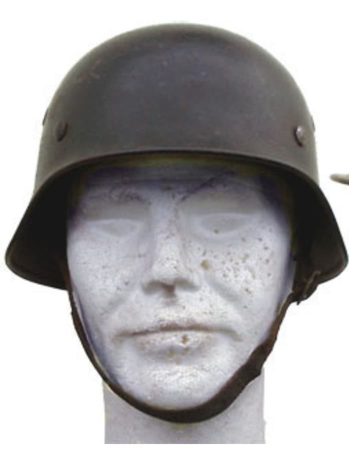
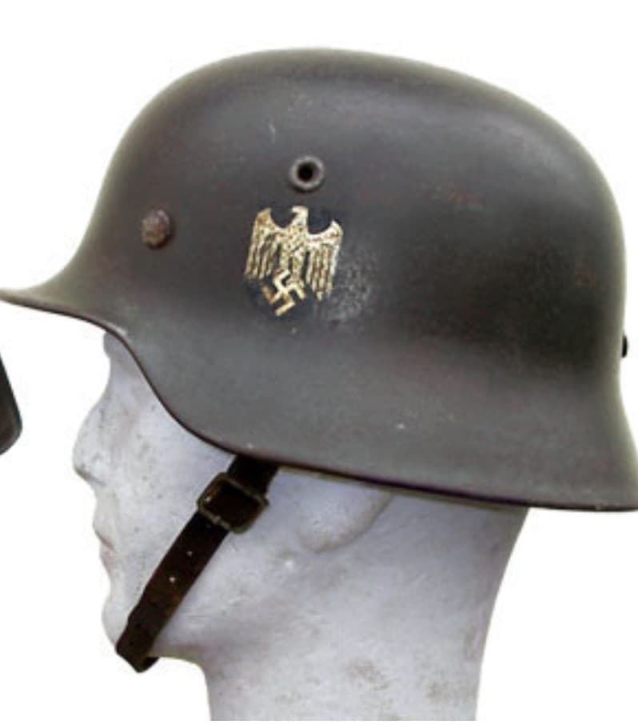
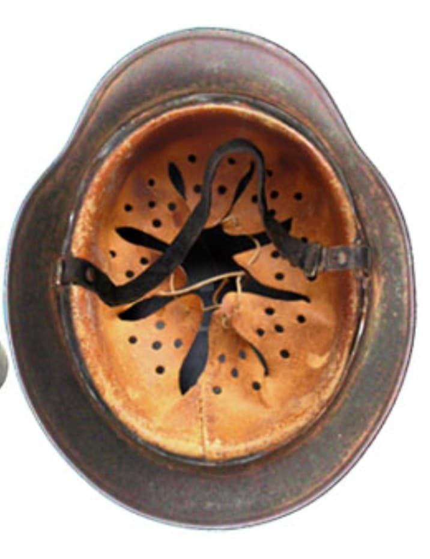

Le casque M35
Le M35 est aujourd’hui considéré comme l’un des casques allemands les plus recherchés en raison de sa fabrication soignée et de ses variantes d’insignes.

Le M35 se caractérise par ses œillets d’aération rapportés, son rebord roulé et sa peinture lisse ou légèrement texturée. L’intérieur est composé d’un liner en cuir à 8 langues, fixé par 3 rivets.
Il est produit en plusieurs variantes selon les branches de la Wehrmacht : Heer, Luftwaffe, Kriegsmarine et Police.


Le M35 est porté durant :
Il est progressivement remplacé par le M40, plus simple à produire, puis par le M42.